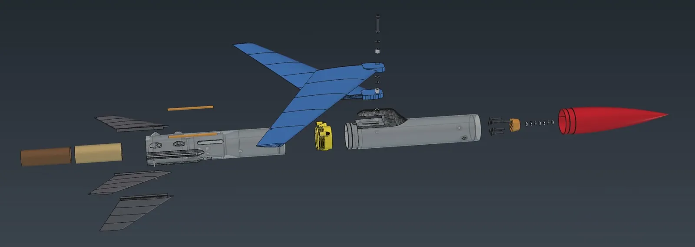
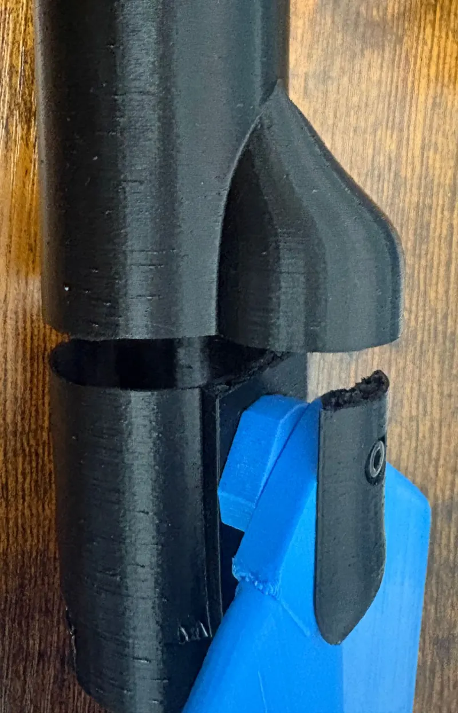
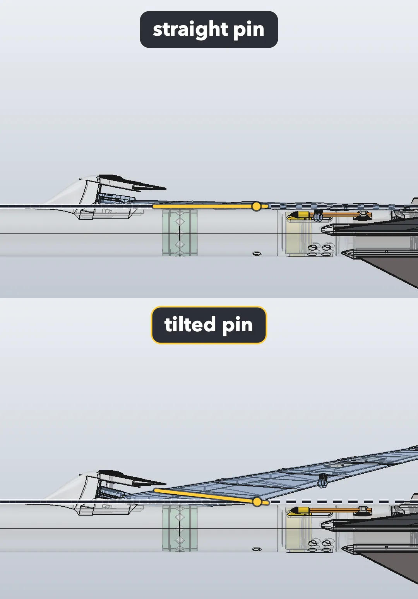
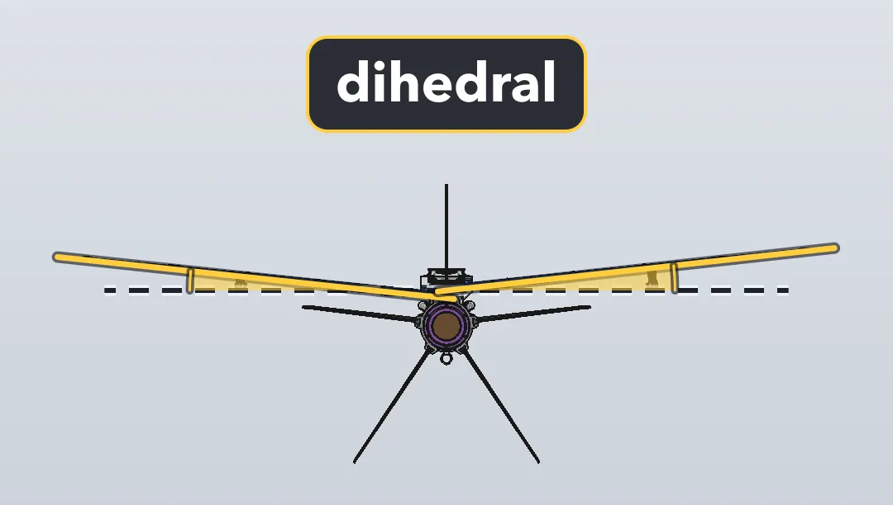
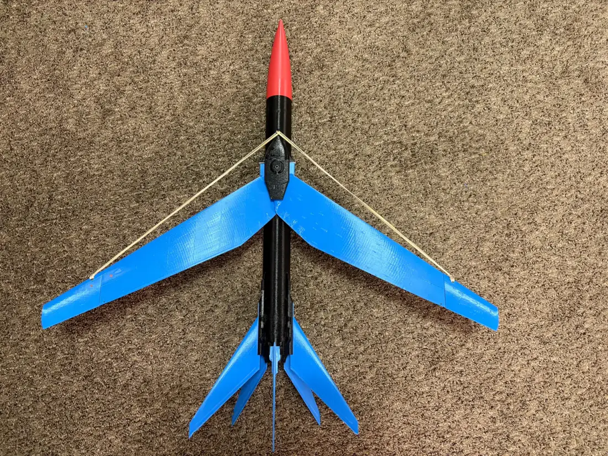
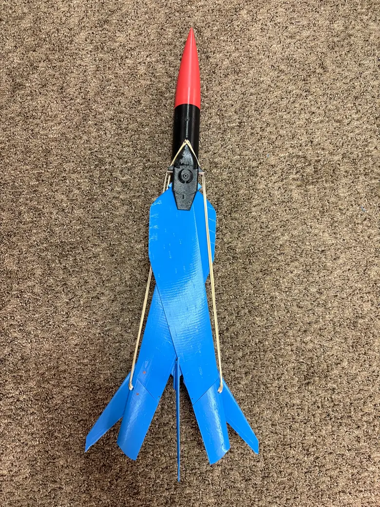
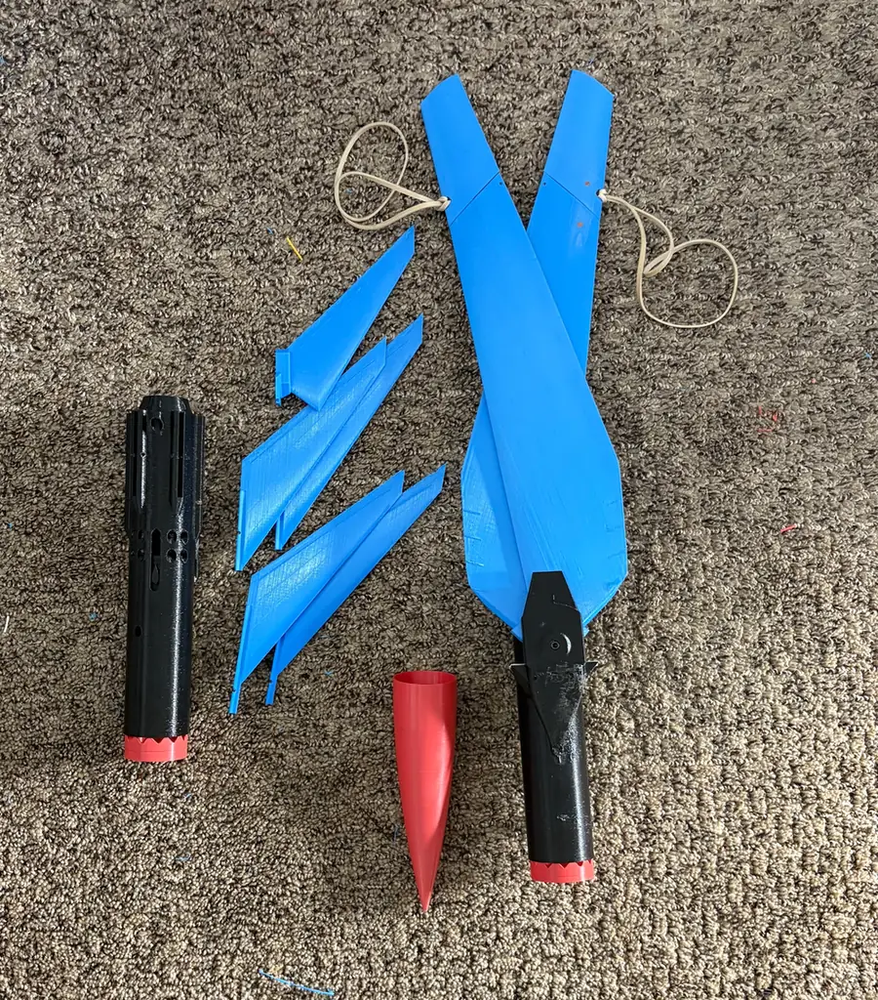
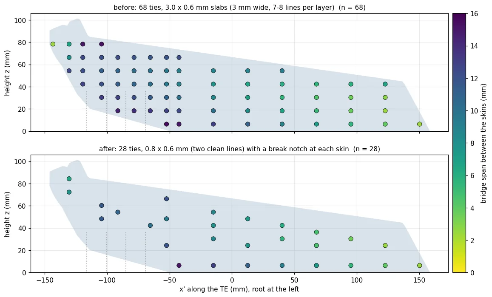

Overview
Rocket gliders are a hard compromise: a rocket wants to be slender and low-drag on the way up, and a glider wants big wings on the way down. This one gets both by folding its wings back for boost and swinging them out near apogee. Everything is printed on my Prusa MK3S+ in PLA and PETG, apart from M3 hardware, filament pins and rubber bands.
- Motor
- D12-3Estes, one per flight
- Liftoff mass
- 335–345 gMeasured on the printed v2 with a motor fitted; target ≤ 350 g
- Apogee
- ~73–77 mMy own simulation, depending on mass
- Glide L/D
- 7.9Predicted by my own aero model, not flight-tested
01 Concept
Fold for the climb, open for the glide
The glider rides up on a single D12-3 with both wings folded back along the body, so on the rod it is basically a rocket: a 41.6 mm PETG tube, a PLA nose cone and a fin can. Near apogee the motor’s ejection charge is designed to push a plunger that pulls the wing latches, and rubber bands then swing the wings out on a single hinge pin, and the same airframe turns into a swept-wing glider.
The wings are stacked on one pin above the body, so the whole mechanism hangs on one small part, the saddle that carries the hinge. That turned out to matter.

Requirements I set
- Light enoughLiftoff at or under 350 g, well inside the 396 g limit quoted for the D12.
- PrintableEvery structural part printed on a Prusa MK3S+ in PLA or PETG; only a handful of small parts bought.
- Folds flat, opens surelyWings stowed for boost and opened reliably by bands, with no help from the pilot.
- Glides stablyTrimmed for a steady glide with real pitch, yaw and roll stability.
- Survives landingsWhen something breaks, it should be a cheap printed part, not the body tube.
02 First test
Version 1 and the hand test that broke it
Version 1 weighed 241 g. On 10 October 2026 I threw it by hand, without a motor, to check the glide before risking a launch. It flipped over, yawed hard to the side and came down on the forward tube, which broke at the wing saddle.
A second test opened the wings twice. The first opening was clean; the snap of the second cracked the tube in two at the earlier damage.
Looking at the design afterwards, the failure was not bad luck. The wings had zero incidence, so it could not trim into a glide. It had almost no weathercock stability in yaw. And a hand toss is far slower than a real glide, so the test itself could not show whether the shape worked. A separate bench calculation showed that one rubber band gave only about 2.4 N·cm of opening torque, too little to count on at altitude.

What the failure taught
-
What happenedFlipped instead of gliding
WhyZero wing incidence, so no way to trim for a glide
v2 responseTilt the hinge so the open wings gain incidence
-
What happenedYawed and rolled away
WhyAlmost no yaw stability and no roll restoring moment
v2 responseBigger four-fin tail plus a top fin; dihedral from the tilted hinge
-
What happenedTube broke at the saddle, twice
WhyAll loads ran through one weak spot in the main tube
v2 responseStronger saddle and couplers that fail before the tubes
-
What happenedOpening force in doubt
WhyAbout 2.4 N·cm from one band
v2 responseMore bands, a band hook and band notches; count still being tuned
03 Redesign
Version 2: six decisions
Version 2 is a full redesign; no v1 part carries over. Each change answers something the first test exposed.
-
An 11° tilted hinge
The pin leans 11° with its top end aft. Folded, nothing changes. As the wings swing open about the tilted axis they pick up about +3.4° of incidence and +8° of dihedral (design values), which v1 lacked.
-
Longer, two-piece keyed wings
Each wing grew to 300 mm (from 247 mm) and is printed in two pieces joined by a deliberately weak key, so a tip strike breaks a cheap key instead of a wing.
-
Four fins plus a top fin
Four enlarged lower fins and a centered top fin replace the small v1 tail, designed to restore the yaw stability the hand test showed was missing.
-
A stronger saddle
The saddle that carries the hinge was rebuilt to take the opening snap and landing loads, with a filed horn as the open stop and printed shims for a zero-play hinge.
-
Couplers that fail first
The tube joints are snap couplers sized so that, by my calculation, the tube is 1.7× stronger than the coupler in its weakest direction. A hard landing should cost a coupler, not a tube. After the first snaps slid out too easily, I scaled the joints up 1.75×.
-
Hollow 6% airfoil fins
Later revisions turned the fins into hollow symmetric 6% airfoils: a single 0.45 mm skin over three internal webs, about 6 g each by CAD estimate.


The appeal of the tilted pin is that one geometric choice fixes two problems at once. Incidence lets the glider trim; dihedral gives it a roll restoring moment. Neither needs an extra moving part.
04 Analysis
What my models predict
I sized v2 with my own tools rather than off-the-shelf rocketry software: a numerical boost integrator using the Estes D12 thrust curve, a three-degree-of-freedom glide model and a lattice-style aerodynamic model of the wing and tail, all fed by a mass and center-of-gravity ledger that I re-ran as the design changed (the latest run predates the final fin revisions). The table marks what each number is.
- Measured weighed or observed
- Simulated my own simulation
- Estimate CAD or hand calculation
- Target a design goal
| Item | Value | Kind |
|---|---|---|
| Mass | ||
| Liftoff mass | 335–345 gWith a loaded D12 fitted; 345 g with a heavier nose ballast screw | Measured |
| Liftoff mass, ledger | 336.8 gPredicted from CAD and slicer masses before weighing | Estimate |
| Liftoff mass limit | ≤ 350 g396 g limit for the motor | Target |
| Version 1 mass | 241 g | Measured |
| Boost | ||
| Motor | Estes D12-3, 24×70 mm | Target |
| Rod exit speed | 12.2 m/s at 337 g12.1 m/s at 345 g | Simulated |
| Apogee | 77 m at 337 g73 m at 345 g, vertical, calm air | Simulated |
| Peak thrust-to-weight | 9.0 | Simulated |
| Glide | ||
| Glide ratio (L/D) | 7.9At CL 0.5: 17.0 m/s, sink about 2.1 m/s | Simulated |
| Stall speed | 13.9 m/s | Simulated |
| Static margin | 24–29% of mean chord | Simulated |
| Geometry and structure | ||
| Wing | 300 mm per side, two piecesArea 4.10 dm², aspect ratio 9.1, 6–9% thick with washout to −5° | Estimate |
| Hinge | Pin tilted 11°+3.4° incidence and +8° dihedral when open | Target |
| Body tube | PETG, 41.6 mm OD, 0.8 mm wall | Target |
| Coupler fuse | Tube 1.7× stronger than couplerAnalytic; no break test yet | Estimate |
| Fin mass | About 6 g each | Estimate |
| Band torque, v1 | About 2.4 N·cm per band | Estimate |
05 Fabrication
Printing it
All of it prints on a Prusa MK3S+. The body tubes are PETG for toughness; the nose, wings, fins and couplers are PLA for stiffness and crisp detail. The thin-walled PETG tubes print hot with little part cooling, one at a time, inside a cardboard box to keep drafts off.



| Setting | PETG tubes | PLA parts |
|---|---|---|
| Nozzle | 270 °C (250 °C first layer) | 210 °C (215 °C first layer) |
| Bed | 75 °C | 60 °C |
| Layer height | 0.20 mm | 0.15 mm for wings, nose and fins; 0.20 mm for couplers |
| Cooling | Part fan at most 40%, none on the walls; 16 s minimum layer time | Fan 100%, uncovered |
| Walls and infill | 2 perimeters, 20% gyroid with solid zones | Fins: one 0.45 mm skin over 3 webs |
| Prep | Filament dried 6 h at 55–65 °C; one tube per print, in a box | — |
Small fixes that add up
The two inner wing panels print trailing-edge-down side by side, joined by break-off ties across the gap. Re-laying them cut 68 thick 3 mm slabs to 28 thin ties with a break notch at each skin, so they snap off cleanly. Acceleration is capped at 600 mm/s² and print speed at 80 mm/s to keep the thin walls true.
Apart from the prints, the bill of materials is M3 screws, nuts and washers for the hinge and nose ballast, 1.75 mm filament as pins and rubber bands, plus two metal spacers, a cardboard gas shield, CA glue and tape.

06 Tooling
CAD as code
I modelled the glider in FreeCAD 1.1, driven headless from Python scripts rather than by hand. Each design change is a parameter edit followed by a scripted rebuild, geometry and G-code checks, and a fresh run of the mass and center-of-gravity ledger, so the CG stays tied to the actual parts. The analysis (the mass ledger, trim, stability and boost simulation) is written in Python with NumPy and SciPy.
I developed the scripts and analysis with Claude Code as an assistant. Design decisions, testing, printing and assembly are mine.
07 Status
Where it is now
- October 2026Version 1 hand-tested. Crashed and broke at the saddle; the analysis of why drove the redesign.
- October 2026Version 2 designed, printed and weighed at 335–345 g with a motor fitted, under the 350 g target.
- NowRefining. Reprinting the fin plate and testing the couplers; the number and size of deployment bands are still open.
- NextGround tests, then a first D12 flight. No powered flight has happened yet.
The print files are published on MakerWorld, and I post short build videos on my YouTube channel.